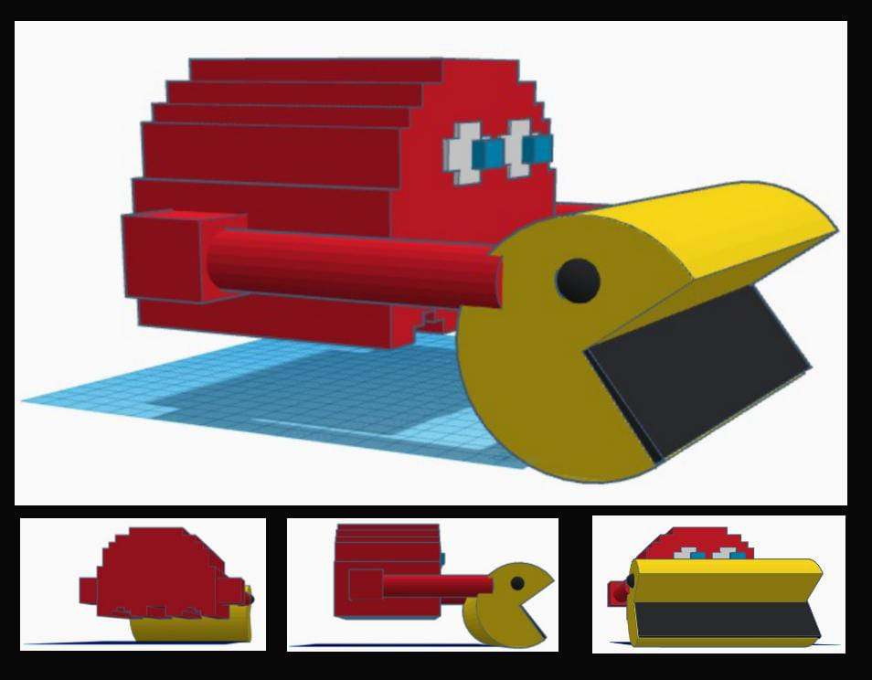

PackzinMan Carro Arduino - Collect Trash
O projeto de um carrinho motorizado com Arduino, inspirado no design do jogo Pac-Man, visa promover a conscientização ambiental e a coleta de pequenos resíduos em fechados, como escritórios e escolas. Esse carrinho combina tecnologia e educação ambiental, incentivando práticas sustentáveis de maneira lúdica e interativa.